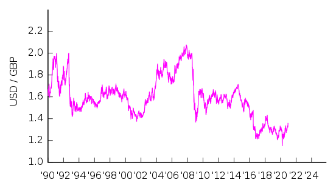

Pound Sterlig
Pound sterling (symbol: £; ISO code: GBP), known in some contexts simply as the pound or sterling, is the official currency of the United Kingdom, Jersey, Guernsey, the Isle of Man, Gibraltar, South Georgia and the South Sandwich Islands, the British Antarctic Territory, and Tristan da Cunha. It is subdivided into 100 pence (singular: penny, abbreviated: p). The Pound sterling is the oldest currency in continuous use. Some nations that do not use sterling also have currencies called the pound.
Sterling is the fourth most-traded currency in the foreign exchange market, after the United States dollar, the euro, and the Japanese yen. Together with those three currencies and the Chinese yuan, it forms the basket of currencies which calculate the value of IMF special drawing rights. As of 30 September 2019, sterling is also the fourth most-held reserve currency in global reserves.
The British Crown dependencies of Guernsey, Jersey and the Isle of Man produce their own local issues of sterling (the Guernsey pound, the Jersey pound and the Manx pound) which are considered fully equivalent to UK sterling in their respective regions The pound sterling is also used in the British Overseas Territories Gibraltar, the Falkland Islands, and in Saint Helena, Ascension and Tristan da Cunha. The Bank of England is the central bank for the pound sterling, issuing its own banknotes, and regulating issuance of banknotes by private banks in Scotland and Northern Ireland. Sterling banknotes issued by other jurisdictions are not regulated by the Bank of England; their governments guarantee convertibility at par.
The cost of one pound in US dollars (from 1990)
Linked exchange rate system
The pound and the euro fluctuate in value against one another, although there may be correlation between movements in their respective exchange rates with other currencies such as the US dollar. Inflation concerns in the UK led the Bank of England to raise interest rates in late 2006 and 2007. This caused the pound to appreciate against other major currencies and, with the US dollar depreciating at the same time, the pound hit a 15-year high against the US dollar on 18 April 2007, reaching US$2 the day before, for the first time since 1992. The pound and many other currencies continued to appreciate against the dollar; sterling hit a 26-year high of US$2.1161 on 7 November 2007 as the dollar fell worldwide.
Following the global financial crisis in late 2008, the pound depreciated sharply, reaching $1.38 (US) on 23 January 2009 and falling below €1.25 against the euro in April 2008. There was a further decline during the remainder of 2008, most dramatically on 29 December when its euro rate hit an all-time low at €1.0219, while its US dollar rate depreciated. The pound appreciated in early 2009, reaching a peak against the euro of €1.17 in mid-July. In the following months the pound remained broadly steady against the euro, with the pound's valued on 27 May 2011 at €1.15 and US$1.65.
The result of the 2016 UK referendum on EU membership caused a major decline in the pound against other world currencies as the future of international trade relationships and domestic political leadership became unclear. The referendum result weakened sterling against the euro by 5% overnight. The night before the vote, the pound was trading at €1.30; the next day, this had fallen to €1.23. By October 2016, the exchange rate was €1.12 to the pound, a fall of 14% since the referendum. By the end of August 2017 the pound was even lower, at €1.08. Against the US dollar, meanwhile, the pound fell from $1.466 to $1.3694 when the referendum result was first revealed, and down to $1.2232 by October 2016, a fall of 16%.